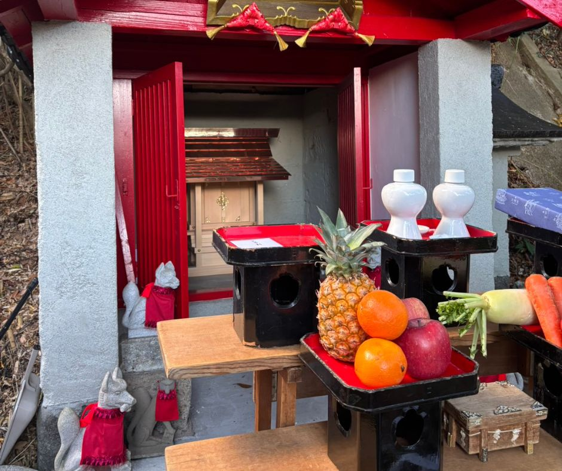

本瑞寺のお膝元にある「茶吉尼天尊」は、小浜景隆の邸宅跡と伝えられる場所にあります。
そのお屋敷へと続く通用道として使われていたとされる一角にあります
お祀りしている神様について
御祭神について
お祀りしている神様は、少し複雑な経緯があります。
一つのお社に、三つの呼び方が伝わっているのも不思議なことです。
- 正一位稲荷大神璽 … お社の中にあったご神体（神道系稲荷）
- 茶吉尼天尊 … ご近所で信仰されている方々の呼び名（仏教系稲荷）
- 村松通力稲荷社 … もともと管理されていた方の呼び名
神社の祭事には、「村松通力稲荷社」ののぼり旗を飾ります。
